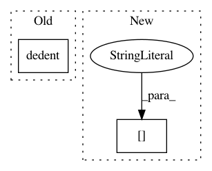

a3dc072268149a6ce0d179fffd8e2e54f6718e17,scanpy/neighbors/__init__.py,,neighbors,#Any#Any#Any#Any#Any#Any#Any#Any#,15
Before Change
weights={"distances", "similarities"},
n_jobs=None,
copy=False):
__doc__ = dedent(\
Compute a neighborhood graph of observations.
Parameters
After Change
adata.uns["neighbors"] = {}
adata.uns["neighbors"]["params"] = {"n_neighbors": n_neighbors, "umap": umap}
adata.uns["neighbors"]["distances"] = neighbors.distances
adata.uns["neighbors"]["connectivities"] = neighbors.connectivities
logg.info(" finished", time=True, end=" " if settings.verbosity > 2 else "\n")
logg.hint(
"added\n"
In pattern: SUPERPATTERN
Frequency: 3
Non-data size: 2
Instances
Project Name: theislab/scanpy
Commit Name: a3dc072268149a6ce0d179fffd8e2e54f6718e17
Time: 2018-03-20
Author: f.alex.wolf@gmx.de
File Name: scanpy/neighbors/__init__.py
Class Name:
Method Name: neighbors
Project Name: Theano/Theano
Commit Name: 15d5b26023b3bbb26792b229e46c56a33f97b10d
Time: 2017-04-16
Author: lamblinp@iro.umontreal.ca
File Name: theano/scalar/basic.py
Class Name: IntDiv
Method Name: c_code
Project Name: Theano/Theano
Commit Name: 15d5b26023b3bbb26792b229e46c56a33f97b10d
Time: 2017-04-16
Author: lamblinp@iro.umontreal.ca
File Name: theano/scalar/basic.py
Class Name: Mod
Method Name: c_code